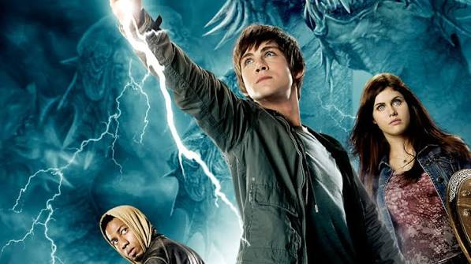

Percy Jackson is a teenage demigod, or Half-Blood, and is a son of Poseidon who who goes from being a "normal" kid to going to Camp Half-Blood, a camp for demigods to be safe and train. In the Lightning Thief, he has to find Zeus's master bolt, which had been stolen, to prevent a war among the gods.